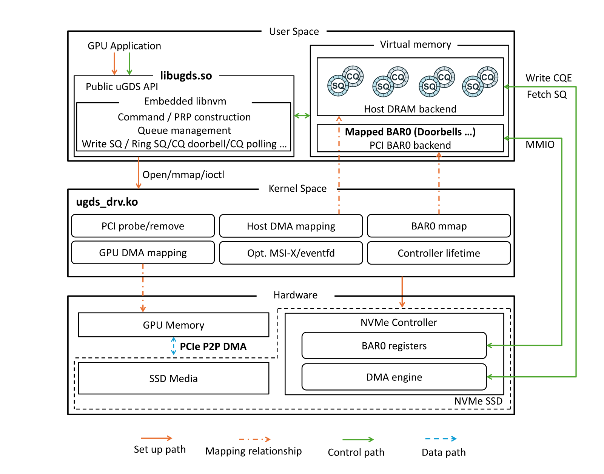
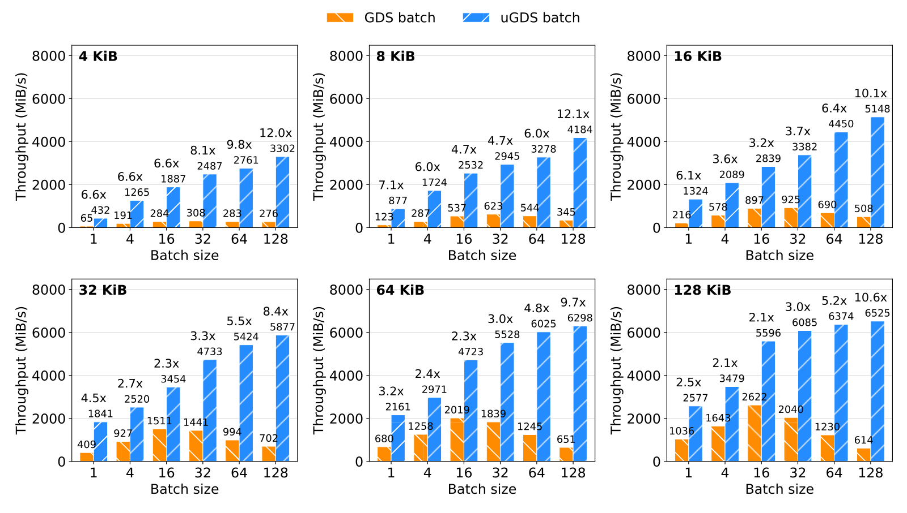
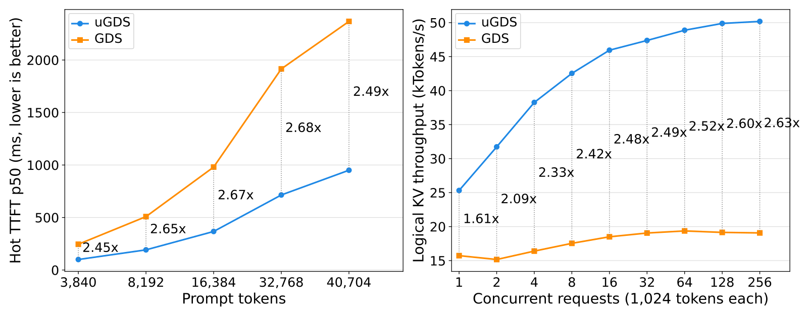

uGDS: A User-Space Development Kit for High-Performance GPU Direct Storage
用 NVIDIA 的 GDS 把数据从 SSD 直接读进 GPU 显存时，作者实测发现，异步读取 99.6% 的时间都卡在提交请求这一步。大模型推理服务会把算过的 KV cache 存到 SSD 上，下次遇到同样开头的请求就直接读回来，不用重算，这一步的速度直接影响首字延迟。uGDS 把指挥 SSD 干活这件事从操作系统内核搬到普通程序里来做。数据照样从 SSD 直达 GPU，变的是谁来下命令。uGDS 批量读的速度最高是 GDS 的 12 倍；接进开源缓存系统后，长提示的首字延迟中位数从 1.9 秒降到 0.7 秒。
大模型推理服务会把算过的 KV cache 存到 SSD 上，下次遇到同样开头的请求就直接读回来，不用重算。NVIDIA 为此提供了 GPU Direct Storage（下文简称 GDS），让数据从 SSD 直接进 GPU 显存，不在主机内存里中转。可作者在开源缓存系统 LMCache 里实测发现，用 GDS 异步读数据，单条任务队列只跑出 2.36 GiB/s，不到同步读带宽的一半；99.6% 的时间都卡在“提交请求”这一步。中山大学、港科大（广州）等单位的这篇论文开源了 uGDS，把“指挥 SSD 干活”这件事从操作系统内核搬到普通程序里来做。数据照样从 SSD 直达 GPU，变的是谁来下命令。在一块 A100 显卡加一块三星 990 PRO 固态盘上，uGDS 批量读的速度最高是 GDS 的 12 倍，批量写最高 30 倍；接进 LMCache 后，长提示的首字延迟（从发出请求到看到第一个输出字的时间）中位数从 1.9 秒降到 0.7 秒。

1. 问题：数据不绕路了，命令还在绕
先说清楚“数据路径”和“控制路径”的区别。数据路径是数据本身从哪里流到哪里；控制路径是谁、通过什么步骤告诉硬件“把哪块数据搬到哪里”。
GDS 解决了数据路径：SSD 可以通过 PCIe 把数据直接 DMA 进 GPU 显存，不经 CPU 搬运。但 GDS 的控制路径每次都要进操作系统内核：一个读请求要依次经过虚拟文件系统、具体的文件系统、块设备层、内核的 SSD 驱动，NVIDIA 的内核模块还要为每 4 KiB 一页的数据查一次 GPU 地址。搬一大块数据时，这些固定开销被摊薄了，不显眼；可在 KV cache 读写、向量检索这类场景里，请求往往小而频繁，又对延迟敏感，这笔开销就成了大头。
作者还指出 GDS 的另外两个问题。
第一，排队规矩太死。GDS 的异步接口继承了 GPU 任务队列（CUDA stream）的规矩：同一队列里，每个请求都要等前一个做完。可 LMCache 读回一段缓存时，各个小块之间根本不需要先后顺序，只要模型计算开始前全部到齐就行。为了跑满带宽，应用只能把请求拆到很多条队列上，等于替 GDS 做调度。
第二，出了问题看不见。GDS 的内核部分开源，但负责批量提交、后台线程和队列衔接的用户态库只发布二进制文件。卡顿了既查不了原因，也改不了策略。
早先已经有人在普通程序里直接驱动 SSD，证明这条路走得通，但那些原型只支持 NVIDIA 显卡，假定只有一个线程在提交，也不跟踪“还在传的请求”，可能出现 SSD 还在往一块显存里写、程序就把这块显存释放了的情况。
2. 方法：CPU 下命令，SSD 搬数据，GPU 只管算
uGDS 把三件事分开。
启动时，只做一次需要特权的设置，由一个小的内核模块完成：从内核驱动手里接管这块 SSD，把 SSD 的控制寄存器和命令队列映射到程序自己能直接读写的内存里，锁定要用的 GPU 显存，记下它们在总线上的地址。
平时读写时，内核完全不参与。程序自己按 SSD 的协议（NVMe，固态盘通用的命令格式）写好一条 64 字节的命令，说明从盘上哪里读、读多少、放到显存的哪些页；然后往 SSD 的一个“门铃”寄存器里写一个数，通知它有新命令；之后去完成队列里查 SSD 有没有报告做完。整个过程都是普通的内存读写，不需要系统调用。
数据本身照旧在 SSD 和 GPU 显存之间直接传，不经过主机内存。
代价是 SSD 必须从内核驱动上解绑，交给 uGDS 独占，程序看到的是“盘上第几个字节”而不是文件。作者认为这和 LMCache、Mooncake 这类自己管理存储块的缓存引擎正好匹配；需要文件的话，可以在上面再叠一层用户态文件系统。
为了让这条路既快又安全，uGDS 做了四个设计。
一是同时支持 NVIDIA 和 AMD 显卡。显存注册时，把两家各自的显存地址统一翻译成 SSD 能认的页地址列表，上层代码不用区分是哪家的卡。
二是把命令队列分成两组。SSD 支持多组命令队列。uGDS 拿出一组深队列专门跑批量请求，其余给单个的同步请求用。这样一大批请求涌进来时，不会把单个请求挤在后面等。批量请求还会攒好多条命令后只按一次“门铃”，省掉重复的通知开销。
三是防止“边写边释放”。这是自己驱动硬件最容易出事故的地方。每发出一个请求，uGDS 就给涉及的显存记一笔“有传输在途”；在途时想释放这块显存，会直接被拒绝。每次注册还带一个递增的编号，防止旧请求误伤新分配到同一地址的显存。命令超时时，这块盘会被标记为故障并隔离，必须等硬件复位、确认 SSD 已经停手，才能回收资源。
四是完成通知可选。默认由 CPU 不停查询完成队列，响应最快，但会占满一个 CPU 核。也可以改用硬件中断，内核只负责叫醒程序，其余照样在用户态完成。
这些想法单独看都不新，在普通程序里直接驱动 SSD 的 SPDK 早就有了。uGDS 的贡献是把它们做成了一个和 GDS 接口一一对应、可以直接替换上线的 GPU 存储库：同步、批量、按队列异步三种接口都有，两家显卡共用一套抽象，安全机制补齐，从内核模块到用户态全部开源。最实用的一点是一条队列就能跑满带宽，应用不用再把请求拆到十几条队列上。
3. 实验：小请求、批量请求和首批请求
测试用的是一台装两颗 Intel 至强 CPU、一块 A100 显卡、一块三星 990 PRO 1TB 固态盘的服务器，对比 NVIDIA 当前版本的 GDS。
uGDS 启动更快：初始化中位数 42 毫秒，GDS 要 115 毫秒，几乎全花在打开 NVIDIA 的驱动会话、加载配置和探测总线拓扑上。对需要频繁拉起、回收工作进程的弹性服务，这能省不少时间。
单个小请求的提升最大。2 个线程写 4 KiB 的小块时，uGDS 的带宽是 GDS 的 6.2 倍，平均延迟从 48 微秒降到 7.7 微秒，因为每次少走了一大串内核步骤。线程多了、请求大了以后，瓶颈转到 SSD 和总线本身，差距缩小到 1.2 到 1.4 倍。在 AMD 平台上和 AMD 的同类库相比，也快约 1.2 倍。
批量请求全面领先。作者测了 36 种“请求大小 × 每批多少个”的组合，uGDS 全部胜出：读是 GDS 的 2.1 到 12.1 倍，写是 2.3 到 30.7 倍。请求越小、每批越多，差距越大。

作者顺着一个反常现象追到了 GDS 的一个问题。按道理每批请求越多应该越快，可 GDS 写 128 KiB 请求时，批量越大反而越慢。原因在第一批：每批 128 个请求时，GDS 的第一批读要 91 毫秒、写要 118 毫秒，占了整个 64 MiB 传输时间的近九成。这是因为 GDS 把显存的地址映射拖到第一次读写时才做，作者推测它还在第一次提交时才分配批量处理所需的内部状态。uGDS 在初始化时就把这些做完了，第一批和后面的批次几乎一样快。就算去掉第一批只看之后的稳态，4 KiB 请求每批 128 个时，uGDS 读仍是 GDS 的 8.8 倍，写是 23.8 倍。
轮询和中断各有用处。4 KiB 小请求时，CPU 不停查询能把延迟从 21 微秒降到 9 微秒，代价是占满一个核。1 MiB 大请求时，改用中断能让发请求的线程 CPU 占用从 100% 降到 4%，延迟只多 5.5%。所以延迟敏感的场景用轮询，大块传输用中断更划算。
4. 实际效果：接进 LMCache
作者把 uGDS 接进 LMCache，用 Qwen3-0.6B 小模型和 vLLM 推理框架做端到端测试。为了专门测 SSD 这条路，他们关掉了 vLLM 自己在内存里的缓存，所有缓存命中都必须从 SSD 读回。
| 指标 | GDS | uGDS |
|---|---|---|
| 32,768 词元长提示的首字延迟中位数 | 1915 毫秒 | 715 毫秒 |
| 1,024 词元短请求、256 个并发时的吞吐 | 约 1.9 万词元/秒（32 个并发就到顶） | 5.0 万词元/秒 |
| “提交请求”占总时间的比例 | 99.6% | 1.0% |
| 单条队列异步读带宽 | 2.36 GiB/s | 5.49 GiB/s |
提示长度从 3,840 到 40,704 个词元，uGDS 的首字延迟都稳定地降到 GDS 的四成左右。GPU 把读回的数据放进 vLLM 显存的时间两边一样，说明省下的时间全部来自存储这条路。另一个关键区别是扩展性：GDS 在 32 个并发请求左右就到顶了，uGDS 一直扩展到 256 个并发，吞吐是 GDS 的 2.6 倍。

5. 局限
uGDS 要独占整块 SSD：从内核驱动上解绑后，这块盘没有文件系统，也不能再给其他程序当普通盘用。目前一套 uGDS 只驱动一块本地 SSD，多盘并用和通过网络访问远端 SSD 还在计划中。同步请求按顺序分配到命令队列，并且一直占着队列直到完成，所以一个大请求会拖慢排在同一队列上的小请求，作者计划加一个按负载分配的调度器。实验只用了一块消费级固态盘、一张 A100，并关掉了 IOMMU（让设备访问内存时做地址检查的硬件），端到端也只测了 0.6B 的小模型。数据中心级 SSD、多张 GPU 共用总线交换芯片时表现如何，还有待验证。
6. 实践意义
如果你在做 KV cache 的分层存储（显存、内存、SSD 三级）或 GPU 向量检索，而且 SSD 是专用的本地盘，uGDS 值得作为 GDS 的替代品试一试。小块、高频、只用一条队列的读取，正是 GDS 最吃亏、uGDS 优势最大的场景。
上线前要确认三件事：这块 SSD 能不能独占、从内核驱动上解绑；上层是不是已经自己管理存储块的分配，像 LMCache、Mooncake 那样；服务器的 IOMMU 设置是否允许 SSD 和 GPU 直接互传。部署时可以按负载选完成通知方式：对延迟敏感的推理节点用 CPU 轮询，吞吐型或 CPU 紧张的任务用中断。
就算不换库，论文对 GDS 的两点分析也能直接用上。第一，GDS 第一次读写某块显存时会额外花几十毫秒做准备，所以服务启动后应先对每块“显存—盘”组合做一次预热读写。第二，GDS 的单条队列会被提交卡住，所以关键的读取要拆到多条队列上并行。